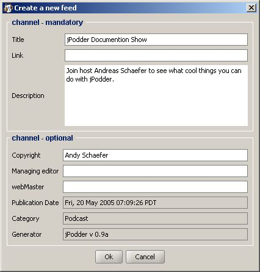
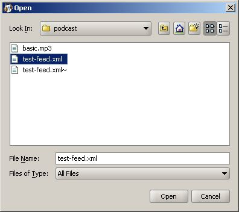
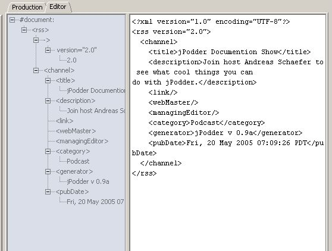

First we need to select the news channel or we want to work on. You can either create a new one or select an existing one. Later the feed can be saved.
To create a new feed click on the link that brings up a the create a new feed dialog:

The create a new feed dialog contains these elements
| Title | Title of the feed (show) |
| Link | The pointing to the feed on the web |
| Description | A description of the show |
| Channel - optional | contains a set of optional fields that can but most not be filled in |
| Ok | accept the input |
| Cancel | discard the input |
After you clicked on the Ok button the title, link and the location of the feed appear in the production tab.
To load an existing feed click on the link that brings up a the Open file selection dialog:

To edit the feed you can click on the tab's Edit link and a second tab beside Production will appear that looks like that:

After that it will look like a
The Editor tab contains these elements
| Left Area | Tree of the feed document's elements |
| Right Area | The entire document which can be edited as you like |